这个启蒙地有确切的地址、以及当时确切发生的事件。尽管，我在当时并没有意识到这是一次人文启蒙，而是在很久以后回想才觉得这真的意味着什么；并且，启蒙和肇基是有区别的，启蒙更像是一个导火索，而肇基则是在很久以前开始有长远目光地布下引火线路。好早就说要巡礼一下自己的人文启蒙地。好早也没有很早，大概是在去年的十二月份才真的把朝花夕拾当成一个事情来列到自己的列表上。
最早的这组，来自一五年二月八号，我在湘雅附二外的一条已经忘了名字的巷道小店里，和一位陪护一起去准备那一天的晚餐。时间地点人物事件都全了。
从梓园路的这一头，骑车到另一头，就正好从我的高中到了医院。前情多少还有些复杂，不过这和我要记述的关联不大。陪护当时真的在医院里做陪护，虽然和我并没有多大关系，但行文的话姑且称她为“陪护”吧。尽管我不是病人，她也不是病人。我锁好单车，和这位陪护一起下楼，去买菜做饭。以往从来没有过这样的体验。
穿过一条里弄，陪护不住和我念叨着自己陪着的病人今晚想吃点什么。巷道边的摊主热情地招呼面前往来穿梭的人群。一些把腰包别在肚子前面的男男女女，举着手中的牌子。说是牌子也有些不妥，因为大多是直接在旁边的打印店里随便打印的一张白底红字的纸，然后用宽口径不干胶缠上几道。还有些都不是打印的，而直接在白纸上用黑色记号笔歪歪扭扭地写着。写着“新邵绥宁 冷水江 住宿”、“代挂专家号”、“包车 吉首 石门 猛洞河”高中的时候，我对训诂和音韵一类还很提胃口，于是根据他们纸上写的内容在尝试区分他们口音属于湘方言的哪一个分支。陪护拿着一把刚买的新鲜小菜在我面前晃了晃，提醒我接下来会不在主街上走，要带菜到店子里头去了。小菜上，摊主为了增重保湿而喷洒的水，摇动了弹到我的脸上，冬天湿冷的风还显得有点冷。
拐进一条狭长的小巷，绿色的塑料筐兜着蔬菜，挤占着行人来往的空间。我有一些，古旧的照片，是那一天扣着三星的S3拍下的。那时候也真的不懂怎么拍照，一切都很童派。
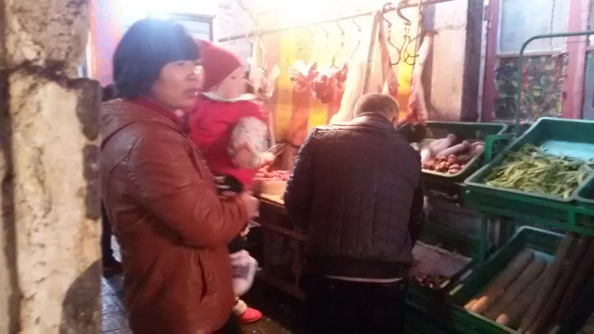
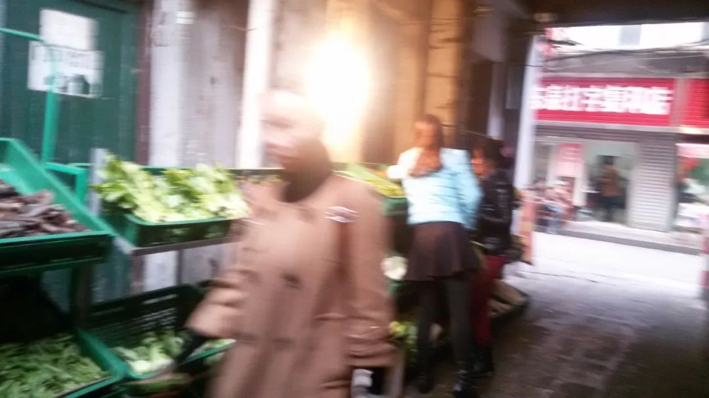
店里的老板和带我去的陪护打着招呼“美女今天准备做几个什么菜咧？唷，这个靓仔是跟你一起来的不咯”反正从进店开始，我的耳朵里就没歇停。
店面不大但是很敞亮，两间小堂里一个专门备菜、一个专门炒菜。后来我才知道，这些店提供的服务叫做“饭菜加工”，主要是病友们自己带菜过来，这边提供各种炊具和已经蒸熟的米饭。大家自带菜过来加工之后，就把米饭钱和使用了炊具的加工费付给老板。老板只出场地、炊具、米饭，其他你自己爱带什么食材、爱做什么口味都由客人自己，甚至连坐下来吃饭的地方也不提供，大抵因为过来做饭菜的都是要带回病房去给病人补充营养或者做特别的病号餐。定价当时我记得也问了一下，铁锅炒一个荤菜是几块钱、炒一个素菜又是几块钱，好像荤菜比素菜要贵两三块。也有高压锅做炖菜，这是那里面最贵的炊具了。和陪护在备菜的这边择菜，整个屋子里都是漓水的篓子翻来倒腾的声音。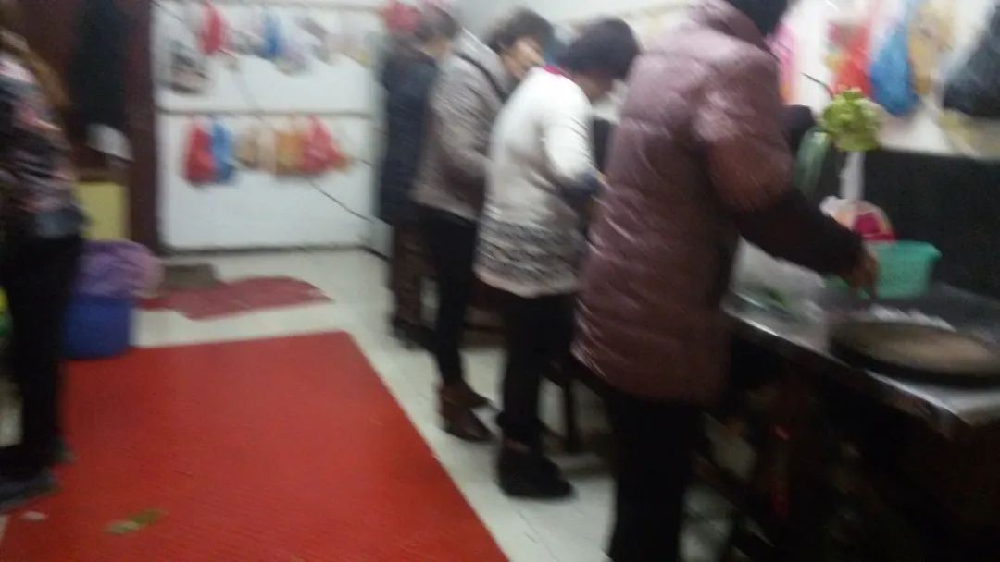
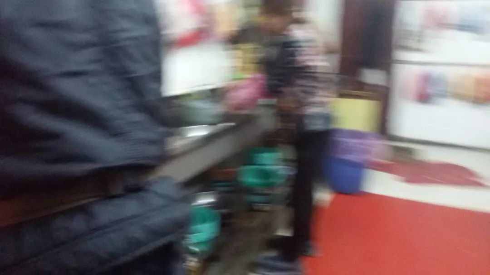
病友们也会和老板打趣，说你怎么不请个人帮忙、明明这块地方出租也很赚钱干嘛不找点轻松的活计，干嘛这里来个人还要问问你炒几个菜然后还掂量着手上的分寸给人家打饭。现在想来老板的答案和我也有点像，觉得自己也不为了赚很多的钱，这样每天见到不同的人其实是为了自己爱玩，看到人们病愈出院甚至有和医生一样的开心。
陪护在准备得只有一两个菜的时候，从壁挂上的好些个油壶中摘下来一个，叫我到隔壁去占个灶先开始炒着。我有些惊奇地问，怎么就从这边挂的一排里面随便拿了个油壶给我，陪护说这就是她买了然后寄存在这里的。大家都这么寄存，这上面挂的一排油壶都是这里的常客才挂着在上面的。因为大家都是病友家属，虽然来这边做饭菜是图近也比食堂便宜，但也还不至于去偷人家壶里的油，缺德偷窃会让病更难好。
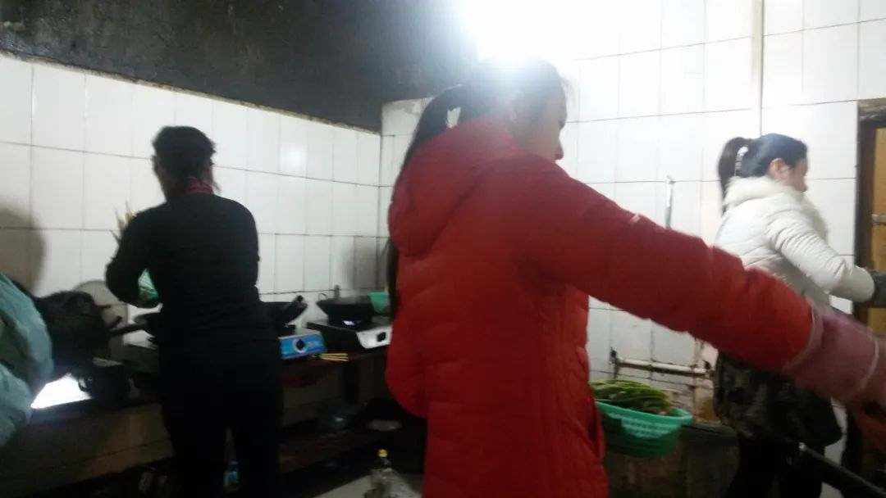
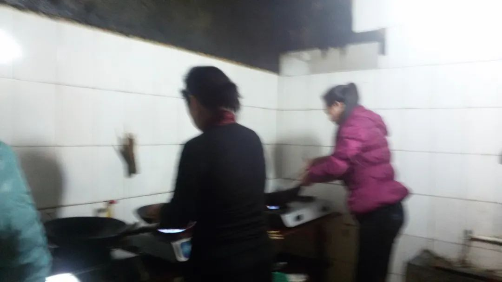
所以我说这一次是，当时没有意识到的人文启蒙。等到了大学之后，开始接触扫街各类人文作品，不仅仅是在训诂和文字修辞上纠结的时候，就慢慢回想起来最早接触的有冲击力的人文事件，就是在附二外边的人文启蒙。
关于长沙的“癌症街”，还有一些其他正式见刊的报道，不过不是在湘雅附二，而是在湘雅附三的嘉桐街。我后来看过各地许多刊物关于各地癌症街的报道，这里找一段《中国青年报》关于嘉桐街的文字：
初夏午后，一位水产店女老板正熟练地剖净黄鳝，装进小塑料袋，递给旁边等候的老汉。案板上的电风扇发出嗡鸣，轰走蚊蝇。“让她吃好一点。”老汉接过黄鳝，眯着眼睛、蘸着唾沫数出几张一元、五元的票子。枯瘦的妻子站在他身后的背阴里，戴着一顶碎花白帽，露出光光的额头和后颈。“我们也挣不了几个钱，全当做善事了。”女老板看着夫妇俩的背影说。隔壁摆摊的裁缝凑过来，补了一句：“只要住到这里来的，说明还想活！”
日复一日，病人们把嘉桐街当成“家”，也当成“战场”。他们在这里吃饱睡好，再迎向医院的仪器针头。有的人最终没有走出医院，街道一头一尾，哀悼的鞭炮有时会在白天燃放。但更重要的则是嘉桐街的炊烟，它在一日三餐之时升腾，从不间断。
上周我又去了一趟附二西门外的文艺新村，想找找看是不是还有这样的地方。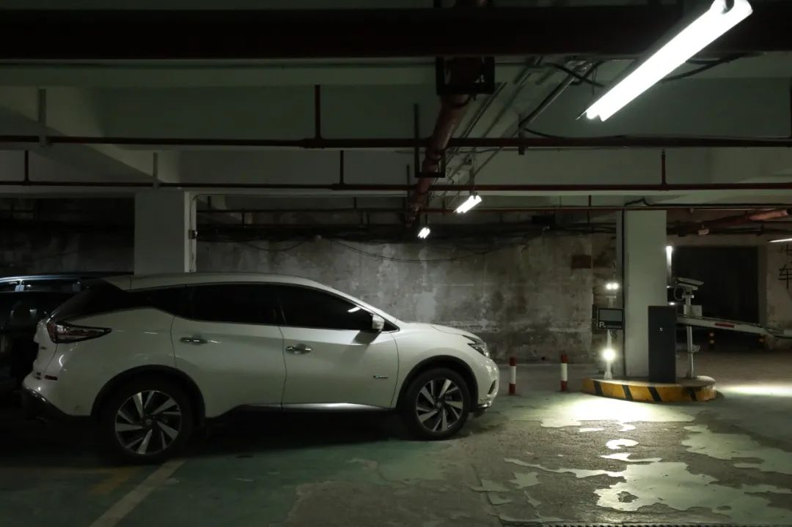
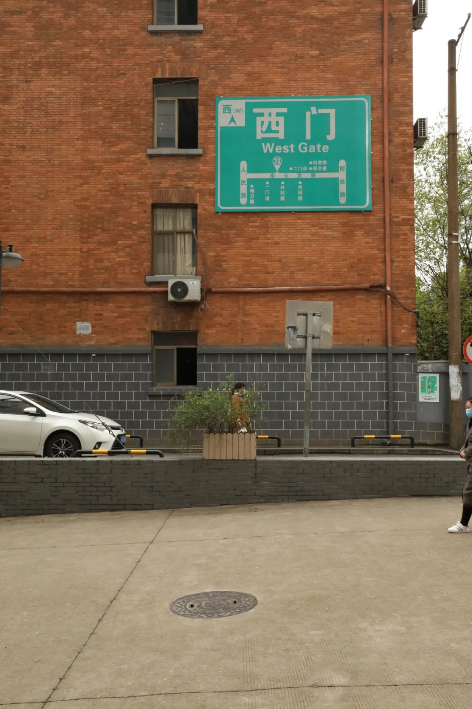
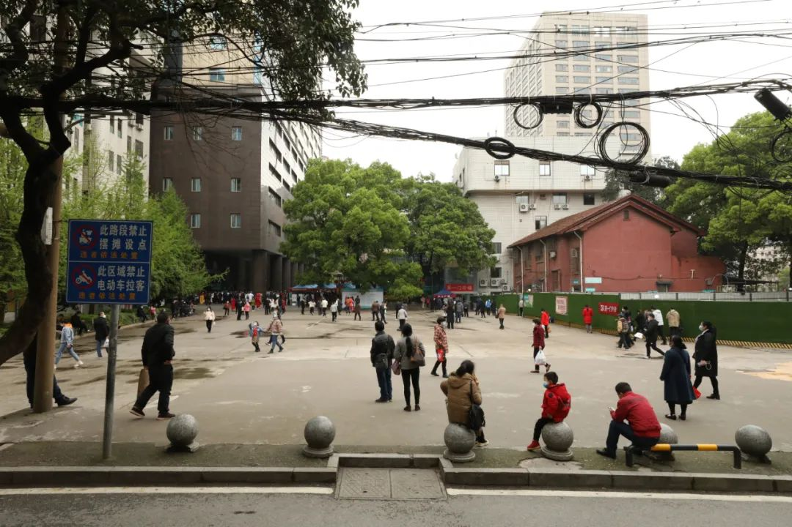
我留心了这条街名叫做“复兴街”，而我在转着找饭菜加工店的时候，转得第一次在长沙迷路了都没有找到还有饭菜加工的地方。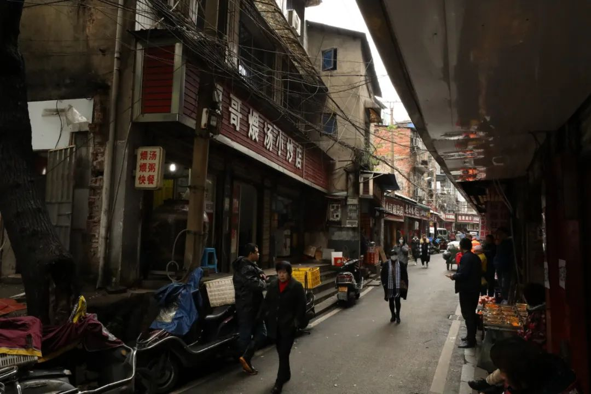
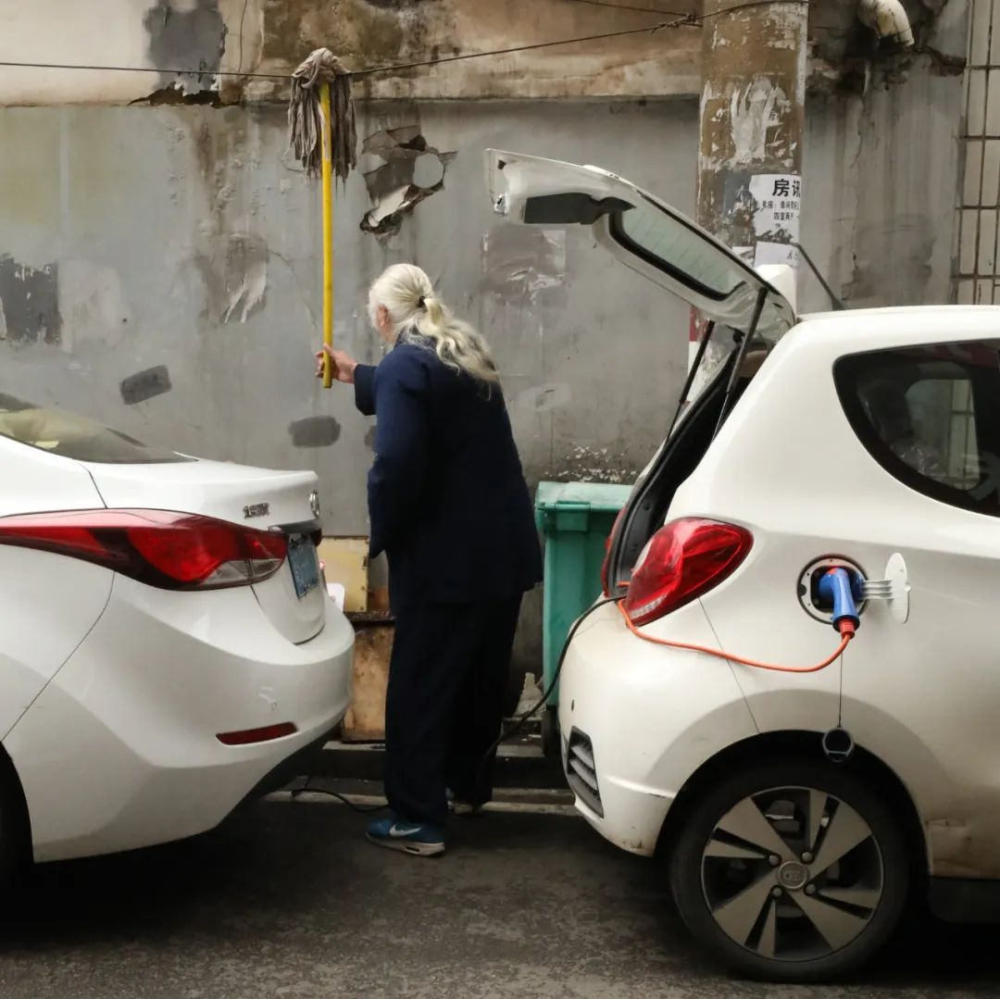
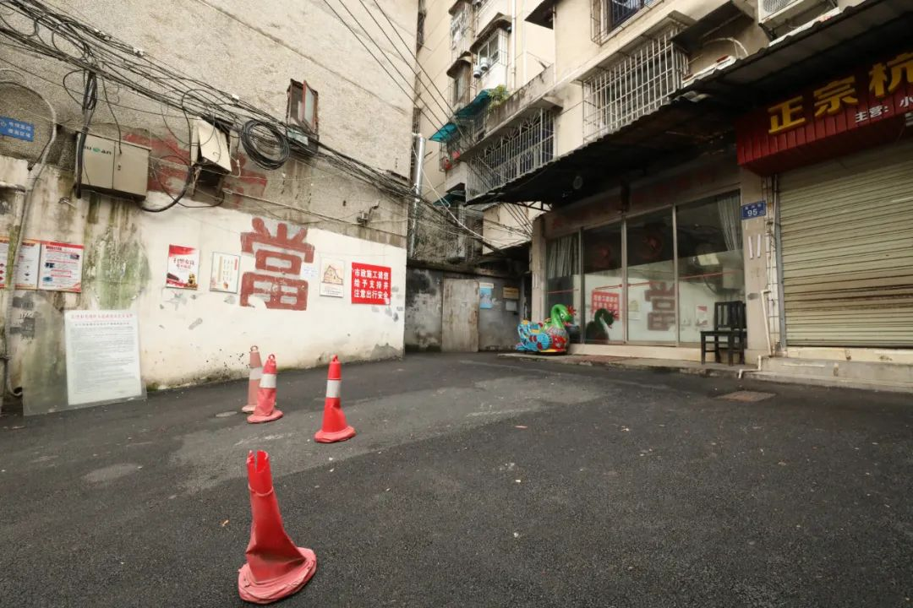
问了问周边的店铺，也许是周边餐馆商户的挤压、也许是出于安全的考量，所以附二西门外的饭菜加工都成了历史。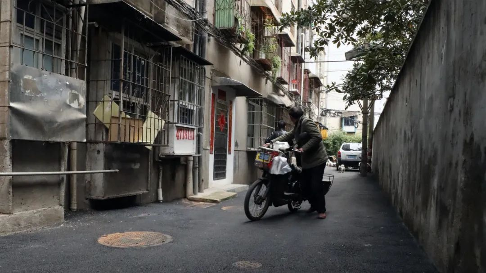
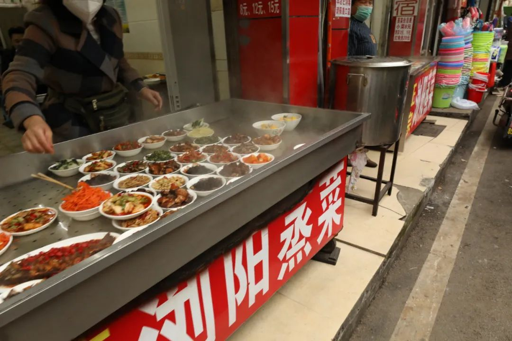
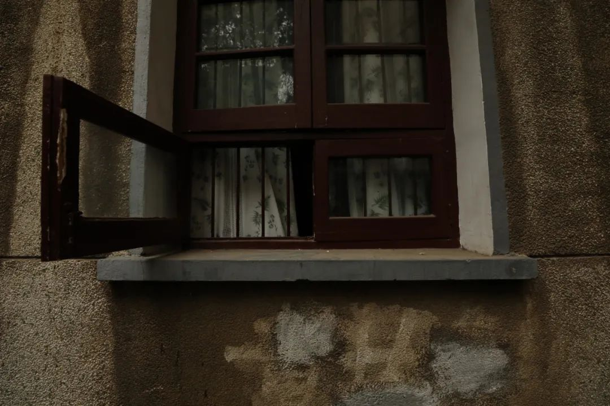
这周我应另一个机会，去了一趟湘雅附一北边的麻园岭。还在。但我没再进去了。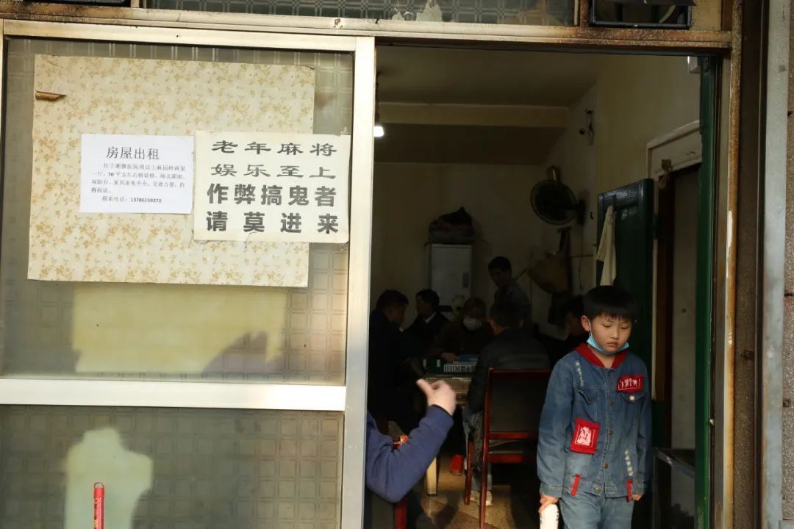
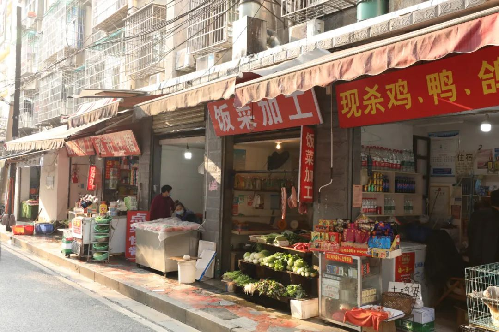
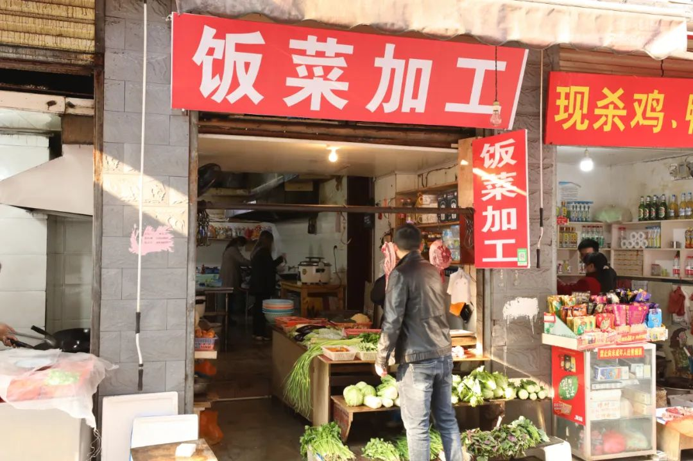
记得在我看过的报道里，有一个句子是：坐在路边发呆的患者和家属，空洞的眼神里，希望与绝望打成了平手。也是在人文启蒙以后，对随时随地上升意义的行为，我把这叫做没有真的接触过生活艰难的部分。反映在我的文字和摄影里面，变成了自己的一些很自我的东西。
启蒙的这回事，作为陪护去医院旁边的饭菜加工店里给病人做饭，我在一五年之后再也没有做过。而且直到前几天，也再没有去过类似的饭菜加工店面里。这根本没有在我的生活和审美中占据一个能看到的份额。但回应启蒙，是很长期，直到现在也还在继续写的生活。所以我会把这叫做启蒙，是我的人文启蒙